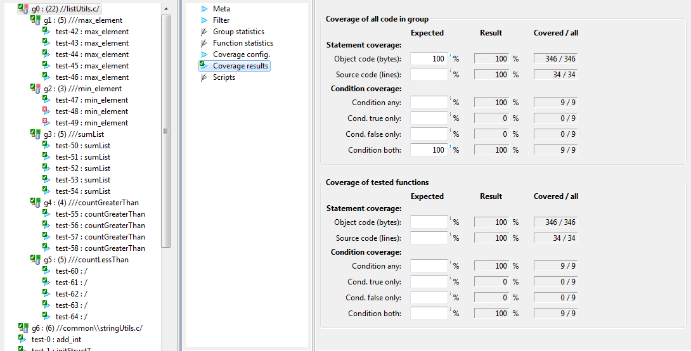

Coverage results
Groups can also contain coverage criteria. It can be
specified either for tested functions only, or all code in the
group. For example, if coverage on all code in a group is
specified, and the group has filter configured for all functions
in a module, then all code in that module will have to be covered
to get 100% coverage. Please note, that all code in a group
is defined by all functions, which are group members, whether
test case(s) for them exist or not.
Fields in this section are editable only if coverage is active and
field Merged analyzer file in section
Coverage config is set.
Coverage results contain merged coverage of those test cases in a
group, which have coverage enabled and saved either in append mode
or saved to its own trd file.
